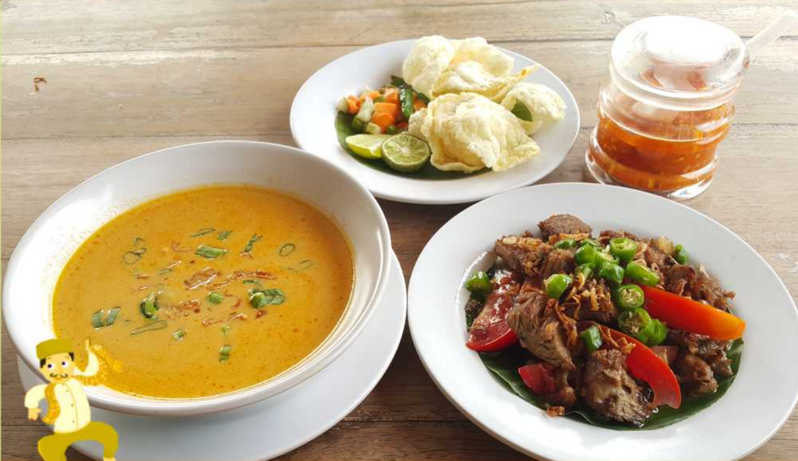
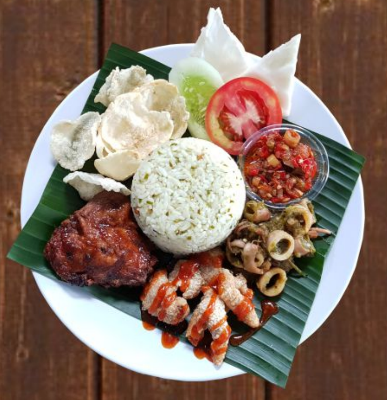
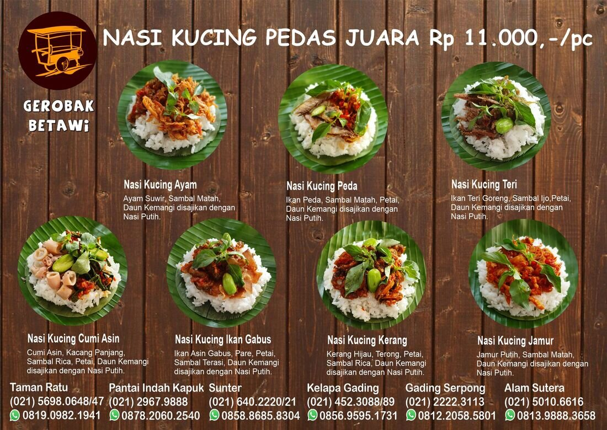
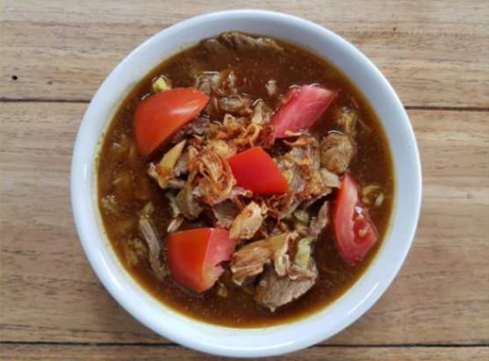
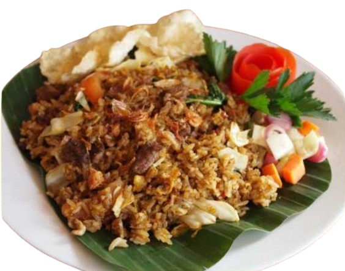

Gerobak Betawi menyajikan Soto Betawi Oseng, Nasi Jeruk Gerobak, dan Nasi Kucing terbaik se-Indonesia, otentik ala gerobakan, nyaman seperti di rumah sendiri.
Makanannya enak, suasananya nyaman. Cocok untuk keluarga.
Banyak variasi kuliner Indonesia. Nasi Jeruk Gerobak jadi menu andalan yang lezat, dengan interior dan suasana yang bagus.
Tempat yang asyik dengan menu khas Betawi yang autentik.
Harganya terjangkau dan makanannya enak!
Makanannya enak dan berkualitas. Suasana restonya nyaman, harganya juga pas.
Makanannya enak-enak, tempatnya terang dan luas, cocok untuk acara besar. Satpamnya juga sigap.
Selamat Datang
Selamat Datang Enyak & Babeh di Gerobak Betawi
Sebagai restoran Indonesia terbaik, kami menyediakan aneka ragam hidangan dan jajanan kuliner khas Nusantara dari kumpulan resep nenek moyang dan resep dari abang-abang gerobak jajanan jalanan, disajikan dalam suasana ala "warung" dengan alunan lagu Betawi.
Cocok banget untuk tempat makan keluarga, kumpul bareng teman, ngedate dengan pacar, atau sekadar iseng jajan sambil nikmati WiFi broadband gratis.
Gerobak Betawi adalah tempat berkumpul keluarga yang hendak makan bersama, bestie-bestie yang kongkow, orang kantoran yang ingin makan siang santai, hingga ibu-ibu arisan yang menunggu anaknya sekolah.
Duduk lama? Santai aja. Nggak ada minimum order, dan WiFi broadband gratis dari jam 07.30 pagi sampai tengah malam, setiap hari, di semua cabang.
WiFi Broadband Gratis07.30 – 24.00 Setiap HariTanpa Minimum Order
Menu Andalan
Yang Bikin Gerobak Betawi Beda
BEST SELLER

Soto Betawi Oseng
Menu soto Betawi paling enak versi kami, kuah kental rempah dengan oseng daging pilihan, disajikan panas-panas khas warung gerobakan.
Rp 61.500,-

Nasi Jeruk Gerobak
Kombinasi ayam bakar manis, cumi sambal ijo yang chewy, dan kulit ayam goreng yang kriuk, dengan nasi aroma daun jeruk, sambal matah & empal.
Rp 11.000,-

Nasi Kucing 7 Rasa
Ayam, teri, peda, gabus, cumi, kerang, jamur, tujuh pilihan rasa nasi kucing pedas yang bikin nagih, dibungkus daun pisang ala jajanan jalanan.
Best Seller
Best Seller
Nasi Kucing Pedas dan Lezat
Buat yang doyan pedas, wajib coba jajanan satu ini. Nasi kucing isi ayam atau ikan peda dipadukan dengan sambal matah unik, pete, dan daun kemangi, lalu dibungkus daun pisang.
Sudah banyak Enyak dan Babeh yang ketagihan, berani coba? Hanya tersedia di Gerobak Betawi.
Berhubung larisnya menu ini, disarankan pesan terlebih dahulu.
Pilihan daging paha kambing terbaik, disate dan disajikan dengan cabe rawit, tomat, bawang merah, dan kecap manis.

Tongseng Kambing
Daging kambing pilihan disajikan dengan kol, tomat, cabe merah, dan kuah tongseng spesial racikan Gerobak Betawi.

Nasi Goreng Kambing
Daging kambing pilihan disajikan dengan nasi goreng gerobak, acar segar, dan emping renyah.
Ada Acara Kantor / Keluarga?
Nasi Kotak & Tumpeng untuk Acara Anda
Mulai dari Rp 28.000 per box, minimal pesan 8 pcs. Cocok untuk rapat kantor, arisan, ulang tahun, hingga acara sekolah. Pesan lebih awal untuk hari-H yang lancar.
Lezatnya tak tertandingi, otentik ala gerobakan, nyaman seperti di rumah sendiri.
6 Cabang Strategis
Resep Turun-Temurun
Selalu Segar Setiap Hari
Sering Ditanyakan
Pertanyaan yang Sering Diajukan
Apakah semua menu Gerobak Betawi halal?
Ya. Seluruh menu Gerobak Betawi telah bersertifikat halal resmi dari Badan Penyelenggara Jaminan Produk Halal (BPJPH), bukan sekadar klaim sepihak.
Apa menu andalan Gerobak Betawi?
Menu andalan kami adalah Soto Betawi Oseng, Nasi Jeruk Gerobak, dan Nasi Kucing dengan 7 pilihan rasa, semuanya dari resep turun-temurun.
Dimana saja lokasi cabang Gerobak Betawi?
Saat ini ada 6 cabang: Taman Ratu, Sunter, Pantai Indah Kapuk (PIK), Kelapa Gading, Gading Serpong, dan Alam Sutera. Lihat alamat lengkap dan peta di halaman Lokasi.
Jam buka Gerobak Betawi jam berapa?
Setiap cabang buka setiap hari, mulai pukul 07.30 pagi hingga 24.00 malam.
Apakah Gerobak Betawi melayani pesanan nasi kotak atau tumpeng untuk acara kantor?
Ya. Kami menyediakan paket Nasi Kotak dan Tumpeng untuk acara kantor, keluarga, maupun kumpul komunitas. Hubungi kami lewat WhatsApp atau formulir kontak untuk pemesanan.
Bisa pesan online atau delivery?
Bisa. Gerobak Betawi tersedia di GoFood dan GrabFood di setiap cabang, atau pesan langsung lewat WhatsApp.
Lapar sekarang? Gerobak Betawi siap antar ke meja makanmu.